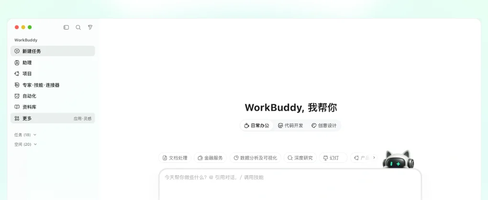

WorkBuddy腾讯（腾讯云）
腾讯出品的全场景 AI 工作台：脱胎于 CodeBuddy 编程团队，连接微信、企业微信、腾讯文档、腾讯会议；按日活计，腾讯称其为国内最受欢迎的效率类 AI 智能体。
一页结论
- 国内办公 Agent 的领跑者之一：腾讯在 2026 年一季度财报中称，按日活跃账户数计 WorkBuddy 已是国内最受欢迎的效率类 AI 智能体；上线三个月日活突破 1,300 万（媒体报道）S8S7
- 编程团队做办公产品：由腾讯云 CodeBuddy 团队打造，与 CodeBuddy 共用账号与积分体系，既能做文档 PPT，也能写代码、做应用S4S2
- 打通腾讯办公生态：连接企业微信、微信、腾讯文档、腾讯会议、乐享等办公 IM、文档、邮箱、会议和知识库S1
- 从个人到企业、从国内到海外：5 月推出企业套件并面向全球上线，6 月发布企业版；个人版 7 月起分为标准、高级、旗舰三档S5S9S2
- 覆盖面最广的客户端：除三大桌面系统外，还支持鸿蒙电脑与手机、微信小程序S1
01公司介绍
02公司战略
腾讯的思路是把已经在内部验证过的编程 Agent 技术，包装成人人能用的办公工作台，再用腾讯办公生态放大。
- 复用 CodeBuddy 技术栈：统一账号与计费，具备企业级安全管理与审计能力S4
- 连接腾讯生态：企业微信、腾讯文档、腾讯会议等办公工具无缝接入S1
- 企业化与出海同步：5 月与创意 Agent Miora、模型服务平台 TokenHub 一起推出企业套件，并面向全球用户上线S9S5
- 降低 AI 使用门槛：花旗研报认为 WorkBuddy 降低了 AI 采用门槛，可能是中国 AI Agent 的转折点S6
03产品定位
| 项目 | 内容 |
|---|---|
| 一句话定位 | “腾讯出品的全场景 AI 办公工作台”：说出要求、执行任务、交付完整成果S1 |
| 目标用户 | 个人办公用户、开发者、企业团队；金融与政企场景S1S3 |
| 核心场景 | 日常办公、代码开发、设计创意、项目协作、专业任务、资料与知识S3 |
| 价值主张 | “从查资料到给结论，15 分钟交付报告”S1 |

04产品与主要功能
WorkBuddy 的特点是“办公 + 编程两栖”：与 CodeBuddy 同源，代码补全和 CLI 都在；同时用专家、技能、连接器和资料库把能力扩到各行各业。
产品架构
交互入口
桌面端（Mac / Windows / Linux / 鸿蒙）移动端（iOS / Android / 鸿蒙）微信小程序网页版CLI（付费版）
Agent 层
自主规划与执行多任务并行自动任务（最多 99 个）个人助理（最多 10 个）项目协作（多人项目）
能力扩展
专家技能（20+）与 MCP连接器（第三方服务）资料库（5～50GB）可托管应用
模型层
Auto 模型调度付费版全模型可选（官网未列出具体模型）S2
运行与生态
本地文件读取与批量处理企业微信、微信、腾讯文档、腾讯会议、乐享代码实时补全
安全与管控TLS / AES-256 全链路加密角色权限与审计日志ISO 27001、SOC 2、等保三级数据本地化存储
核心功能
截图来自 WorkBuddy 官网，2026-11-02。
12 项能力评估
代码审查无或未说明未见独立的代码审查功能
05商业模式
个人版按积分订阅，与 CodeBuddy 共享积分；企业版按人按月收费，另有私有化部署。
| 版本 | 每月实得积分（限时） | 主要权益 |
|---|---|---|
| 体验版 | 500 | 3 个自动任务，Auto 模型调度S2 |
| 标准版 ¥99 | 4,000 | 15 个自动任务，全模型可选，CLI 访问S2 |
| 高级版 ¥199 | 9,000 | 30 个自动任务，20GB 资料库S2 |
| 旗舰版 ¥999 | 50,000 | 99 个自动任务，功能优先体验S2 |
| 企业版 | 每人每月 2,000 积分 | 企业旗舰版 ¥198 / 人 / 月、企业专享版 ¥316 / 人 / 月（限时优惠）S10 |
| 私有化部署 | 项目制 | 按部署规模报价S10 |
收费逻辑：免费体验版拉新，积分订阅覆盖个人高频用户，企业版和私有化部署对接腾讯云的政企客户。媒体估算其年化收入约 3 亿元人民币（估算，非官方披露）S7。
06上下游与渠道
上游：算力
腾讯云
WorkBuddy
桌面、移动、小程序、网页、CLI
下游客户
个人办公用户与开发者金融与政企客户（私有化部署）
07市场表现
| 指标 | 数据 | 口径 |
|---|---|---|
| 日活排名 | 按日活跃账户数计，国内最受欢迎的效率类 AI 智能体 | 腾讯 2026 年一季度财报表述（媒体转述）S8 |
| 用户规模 | 上线三个月日活破 1,300 万，月活约 2,000 万 | 媒体报道S7 |
| 访问量 | 2026 年 6 月单月访问量超过 2,000 万，AI 办公智能体赛道第一 | 易观数据（媒体转述）S8 |
| 年化收入 | 约 3 亿元人民币 | 市场估算，非官方披露S7 |
以上用户数字口径不一，只宜看量级。
08用户口碑
公开评价以国内媒体评测与券商研报为主。
09安全合规
10近期动态
11潜在风险分析意见
| 风险 | 表现 | 可能程度 |
|---|---|---|
| 同质化竞争 | 豆包工作、阿里千问办公等同期竞争，功能趋同S11 | 高 |
| 模型透明度 | 官网未公开使用的模型，企业客户难以评估能力与合规S2 | 中 |
| 定价调整的口碑风险 | 订阅体系上线四个月即调整，老用户需要过渡S2 | 中 |
| 海外拓展 | 全球版面对 ChatGPT Work、Claude Cowork 等海外产品与数据合规要求（分析意见） | 中 |
| 数据权限 | 连接企业 IM、文档、邮箱后，权限配置失误影响更大S1 | 中 |
“可能程度”为基于现有公开信息的判断，不是量化预测。
12综合结论分析意见
优势
- 国内日活领先，起量快
- 腾讯办公生态与客户端覆盖最广
- 编程与办公两栖
劣势
- 模型来源不透明
- 个人定价体系复杂、调整频繁
机会
- 企业微信与腾讯云的政企客户
- 全球版出海
威胁
- 豆包工作等国内大厂产品同期竞争
- 海外市场的模型厂商自有产品
对 AI 产品团队的启示
- 内部验证过的技术最快变成产品：CodeBuddy 先在腾讯内部大规模使用，再迁移到办公场景，WorkBuddy 上线三个月就有上千万日活。
- 客户端覆盖本身就是增长杠杆：鸿蒙、小程序这类“非主流”入口，在国内能触达大量海外产品够不着的用户。
- 账号与积分打通，降低交叉使用门槛：WorkBuddy 和 CodeBuddy 共享积分，用户在编程和办公之间切换没有额外成本。
- 定价调整要给老用户过渡：半年保价、补发积分这样的安排，能降低改价带来的流失。
信息缺口
以下信息未找到可靠的公开来源，本报告不做推测。
- WorkBuddy 使用的具体模型（官网只写“全模型可选”）
- 腾讯财报中的原始用户数字（媒体转述口径不一）
- 官方收入数据
- 全球版的定价与可用地区
来源
A 官方 · B 权威媒体或第三方 · C 社区（仅用于口碑与线索）。访问日期均为 2026-11-02。
- S1 · AWorkBuddy 官网腾讯
- S2 · AWorkBuddy 定价详情腾讯 · 2026-07 起
- S3 · AWorkBuddy 简介腾讯
- S4 · BTencent releases WorkBuddy, an AI tool similar to OpenClawGIGAZINE · 2026-03-10
- S5 · BTencent launches WorkBuddy productivity AI agent for global usersTechNode · 2026-05-29
- S6 · BCitigroup: Tencent's WorkBuddy Lowers Barriers to AI Adoption老虎证券资讯 · 2026
- S7 · CWorkBuddy 上线三个月 DAU 破 1300 万，腾讯办公 Agent 加速商业化老虎证券资讯 · 2026
- S8 · B月访问量第一！腾讯 WorkBuddy 持续领跑 AI 办公智能体赛道同花顺财经 · 2026-07-20
- S9 · BTencent Cloud's WorkBuddy and Miora to enhance workforce productivityCRN Asia · 2026
- S10 · AWorkBuddy 企业版限时优惠腾讯云开发者社区 · 2026
- S11 · BByteDance Launches Doubao Work as China's Tech Giants Pivot to Office AI第一财经 Yicai Global · 2026-08